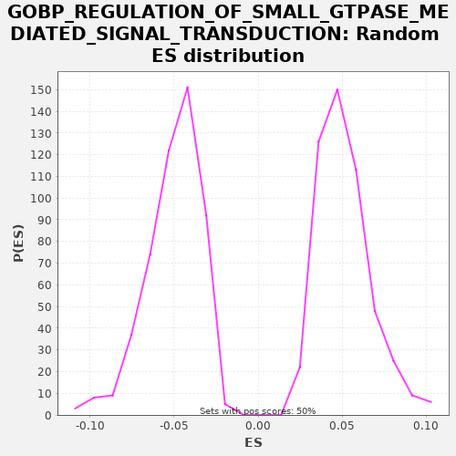

| | | Dataset | X_enriched_genes copy |
| Phenotype | NoPhenotypeAvailable |
| Upregulated in class | na_neg |
| GeneSet | GOBP_REGULATION_OF_SMALL_GTPASE_MEDIATED_SIGNAL_TRANSDUCTION |
| Enrichment Score (ES) | -0.31111175 |
| Normalized Enrichment Score (NES) | -6.171489 |
| Nominal p-value | 0.0 |
| FDR q-value | 0.0 |
| FWER p-Value | 0.0 |
Table: GSEA Results Summary
 Fig 1: Enrichment plot: GOBP_REGULATION_OF_SMALL_GTPASE_MEDIATED_SIGNAL_TRANSDUCTION
Fig 1: Enrichment plot: GOBP_REGULATION_OF_SMALL_GTPASE_MEDIATED_SIGNAL_TRANSDUCTION
Profile of the Running ES Score & Positions of GeneSet Members on the Rank Ordered List
| SYMBOL | RANK IN GENE LIST | RANK METRIC SCORE | RUNNING ES | CORE ENRICHMENT | | 1 | STMN1 | 165 | 0.273 | -0.0052 | No |
| 2 | FLOT1 | 271 | 0.208 | -0.0074 | No |
| 3 | RHOA | 794 | 0.088 | -0.0312 | No |
| 4 | TGFB2 | 1118 | 0.054 | -0.0447 | No |
| 5 | SIPA1 | 1224 | 0.045 | -0.0469 | No |
| 6 | RAC3 | 1255 | 0.043 | -0.0451 | No |
| 7 | TIMP2 | 1545 | 0.029 | -0.0568 | No |
| 8 | RTN4R | 1580 | 0.028 | -0.0552 | No |
| 9 | ARHGDIG | 1790 | 0.022 | -0.0627 | No |
| 10 | ARHGAP40 | 2195 | 0.015 | -0.0804 | No |
| 11 | RHOU | 2322 | 0.014 | -0.0837 | No |
| 12 | RASGRP4 | 2393 | 0.013 | -0.0839 | No |
| 13 | LZTR1 | 2541 | 0.011 | -0.0883 | No |
| 14 | RASA4 | 3135 | 0.005 | -0.1158 | No |
| 15 | GARNL3 | 3200 | 0.005 | -0.1158 | No |
| 16 | SPRY3 | 3213 | 0.005 | -0.1131 | No |
| 17 | RASGRF1 | 3329 | 0.004 | -0.1157 | No |
| 18 | DEPDC7 | 3867 | 0.001 | -0.1404 | No |
| 19 | GPR4 | 3883 | 0.000 | -0.1378 | No |
| 20 | RGL2 | 4108 | -0.001 | -0.1461 | No |
| 21 | F2RL3 | 4124 | -0.001 | -0.1435 | No |
| 22 | LRRD1 | 4226 | -0.002 | -0.1454 | No |
| 23 | ARHGAP4 | 4246 | -0.002 | -0.1431 | No |
| 24 | EPOR | 4328 | -0.002 | -0.1439 | No |
| 25 | RASGRP1 | 4356 | -0.002 | -0.1420 | No |
| 26 | ARAP3 | 4425 | -0.003 | -0.1422 | No |
| 27 | GPR35 | 4505 | -0.003 | -0.1429 | No |
| 28 | GPR65 | 4719 | -0.004 | -0.1507 | No |
| 29 | ARHGEF25 | 4732 | -0.004 | -0.1479 | No |
| 30 | SRC | 4972 | -0.005 | -0.1570 | No |
| 31 | F2RL1 | 5111 | -0.006 | -0.1609 | No |
| 32 | MYOC | 5233 | -0.007 | -0.1638 | No |
| 33 | A2M | 5629 | -0.009 | -0.1811 | No |
| 34 | LPAR4 | 6053 | -0.010 | -0.1998 | No |
| 35 | EPS8L1 | 6131 | -0.011 | -0.2004 | No |
| 36 | RHOF | 6610 | -0.013 | -0.2220 | No |
| 37 | ABRA | 6626 | -0.013 | -0.2194 | No |
| 38 | RASAL1 | 6748 | -0.013 | -0.2224 | No |
| 39 | GPR18 | 6830 | -0.014 | -0.2232 | No |
| 40 | FBP1 | 6870 | -0.014 | -0.2219 | No |
| 41 | RIPOR2 | 6925 | -0.014 | -0.2214 | No |
| 42 | VAV1 | 7186 | -0.015 | -0.2316 | No |
| 43 | RHOBTB1 | 7273 | -0.016 | -0.2327 | No |
| 44 | RHOH | 7311 | -0.016 | -0.2313 | No |
| 45 | SH3BP1 | 7636 | -0.017 | -0.2448 | No |
| 46 | ARHGEF28 | 7676 | -0.017 | -0.2435 | No |
| 47 | GPR55 | 7765 | -0.018 | -0.2447 | No |
| 48 | RASAL3 | 7998 | -0.019 | -0.2534 | No |
| 49 | RELN | 8013 | -0.019 | -0.2508 | No |
| 50 | ARHGAP9 | 8282 | -0.021 | -0.2614 | No |
| 51 | NUP62 | 8356 | -0.021 | -0.2619 | No |
| 52 | PSD2 | 8429 | -0.021 | -0.2623 | No |
| 53 | PIK3CG | 8543 | -0.022 | -0.2648 | No |
| 54 | PIK3R2 | 8798 | -0.023 | -0.2747 | No |
| 55 | FGF10 | 9055 | -0.025 | -0.2847 | No |
| 56 | ARHGAP25 | 9105 | -0.026 | -0.2839 | No |
| 57 | SYNPO2L | 9127 | -0.026 | -0.2816 | No |
| 58 | CDC42 | 9343 | -0.027 | -0.2895 | No |
| 59 | RHOG | 9348 | -0.027 | -0.2863 | No |
| 60 | ARHGAP22 | 9458 | -0.028 | -0.2886 | No |
| 61 | ARHGEF6 | 9471 | -0.028 | -0.2859 | No |
| 62 | DENND3 | 9543 | -0.029 | -0.2862 | No |
| 63 | ARHGEF9 | 9578 | -0.029 | -0.2846 | No |
| 64 | ARHGAP8 | 9695 | -0.030 | -0.2873 | No |
| 65 | ARHGAP36 | 9830 | -0.031 | -0.2910 | No |
| 66 | ARHGEF26 | 9841 | -0.031 | -0.2881 | No |
| 67 | ARRB1 | 9901 | -0.031 | -0.2878 | No |
| 68 | SYNGAP1 | 9923 | -0.031 | -0.2856 | No |
| 69 | LPAR6 | 10026 | -0.032 | -0.2875 | No |
| 70 | IQSEC3 | 10196 | -0.034 | -0.2930 | No |
| 71 | RASGRF2 | 10274 | -0.034 | -0.2936 | No |
| 72 | RAC2 | 10283 | -0.035 | -0.2907 | No |
| 73 | CYTH4 | 10373 | -0.035 | -0.2920 | No |
| 74 | NOTCH1 | 10418 | -0.036 | -0.2909 | No |
| 75 | TIAM2 | 10543 | -0.037 | -0.2940 | No |
| 76 | TAGAP | 10589 | -0.037 | -0.2930 | No |
| 77 | IQSEC2 | 10612 | -0.037 | -0.2908 | No |
| 78 | PLCE1 | 10727 | -0.039 | -0.2933 | No |
| 79 | ARHGAP42 | 10855 | -0.040 | -0.2966 | No |
| 80 | ARHGEF19 | 10858 | -0.040 | -0.2933 | No |
| 81 | ARHGAP30 | 10890 | -0.040 | -0.2916 | No |
| 82 | FGD4 | 10926 | -0.040 | -0.2900 | No |
| 83 | APOE | 11084 | -0.042 | -0.2949 | No |
| 84 | ARHGAP45 | 11162 | -0.043 | -0.2955 | No |
| 85 | GDI2 | 11171 | -0.043 | -0.2926 | No |
| 86 | GPR20 | 11180 | -0.043 | -0.2896 | No |
| 87 | APOA1 | 11217 | -0.043 | -0.2881 | No |
| 88 | KCTD13 | 11238 | -0.043 | -0.2858 | No |
| 89 | DENND4B | 11366 | -0.045 | -0.2891 | No |
| 90 | RHOD | 11515 | -0.046 | -0.2934 | No |
| 91 | IGF1 | 11547 | -0.047 | -0.2917 | No |
| 92 | ARHGAP31 | 11585 | -0.047 | -0.2903 | No |
| 93 | SGSM3 | 11819 | -0.050 | -0.2991 | No |
| 94 | ITPKB | 12051 | -0.053 | -0.3077 | Yes |
| 95 | RHOQ | 12058 | -0.053 | -0.3047 | Yes |
| 96 | RABL3 | 12086 | -0.054 | -0.3027 | Yes |
| 97 | RHOV | 12156 | -0.055 | -0.3030 | Yes |
| 98 | BCL6 | 12165 | -0.055 | -0.3000 | Yes |
| 99 | STARD13 | 12180 | -0.055 | -0.2974 | Yes |
| 100 | SRGAP3 | 12244 | -0.056 | -0.2973 | Yes |
| 101 | PSD | 12274 | -0.056 | -0.2955 | Yes |
| 102 | F2RL2 | 12295 | -0.057 | -0.2931 | Yes |
| 103 | CAVIN4 | 12307 | -0.057 | -0.2903 | Yes |
| 104 | RHOC | 12370 | -0.058 | -0.2902 | Yes |
| 105 | CCDC125 | 12400 | -0.058 | -0.2884 | Yes |
| 106 | ARHGEF17 | 12466 | -0.059 | -0.2884 | Yes |
| 107 | DEPDC1B | 12485 | -0.059 | -0.2860 | Yes |
| 108 | ARHGAP44 | 12505 | -0.060 | -0.2836 | Yes |
| 109 | ARHGEF4 | 12644 | -0.062 | -0.2874 | Yes |
| 110 | EPS8L2 | 12665 | -0.062 | -0.2851 | Yes |
| 111 | PSD4 | 12705 | -0.062 | -0.2838 | Yes |
| 112 | SLIT2 | 12749 | -0.063 | -0.2826 | Yes |
| 113 | KANK1 | 12782 | -0.064 | -0.2809 | Yes |
| 114 | CYTH2 | 12860 | -0.065 | -0.2816 | Yes |
| 115 | RHOBTB2 | 12927 | -0.066 | -0.2817 | Yes |
| 116 | RASIP1 | 12929 | -0.066 | -0.2784 | Yes |
| 117 | RALGPS1 | 12962 | -0.066 | -0.2767 | Yes |
| 118 | RHOJ | 13094 | -0.069 | -0.2801 | Yes |
| 119 | TIAM1 | 13096 | -0.069 | -0.2768 | Yes |
| 120 | PREX1 | 13131 | -0.069 | -0.2752 | Yes |
| 121 | ARHGAP28 | 13231 | -0.070 | -0.2770 | Yes |
| 122 | DLC1 | 13291 | -0.071 | -0.2767 | Yes |
| 123 | NGEF | 13369 | -0.073 | -0.2774 | Yes |
| 124 | ARHGAP20 | 13385 | -0.073 | -0.2748 | Yes |
| 125 | CDON | 13497 | -0.075 | -0.2772 | Yes |
| 126 | STAMBP | 13548 | -0.076 | -0.2765 | Yes |
| 127 | OPHN1 | 13606 | -0.077 | -0.2761 | Yes |
| 128 | NGF | 13626 | -0.077 | -0.2737 | Yes |
| 129 | ARHGDIB | 13670 | -0.078 | -0.2726 | Yes |
| 130 | FAM13A | 13714 | -0.079 | -0.2715 | Yes |
| 131 | SPRY4 | 13779 | -0.079 | -0.2714 | Yes |
| 132 | OCRL | 13902 | -0.082 | -0.2744 | Yes |
| 133 | ARFGAP1 | 13951 | -0.083 | -0.2736 | Yes |
| 134 | ARHGAP24 | 13987 | -0.083 | -0.2720 | Yes |
| 135 | GDI1 | 14023 | -0.084 | -0.2705 | Yes |
| 136 | PDGFRB | 14040 | -0.084 | -0.2680 | Yes |
| 137 | FGD3 | 14048 | -0.084 | -0.2650 | Yes |
| 138 | ARHGEF5 | 14076 | -0.085 | -0.2630 | Yes |
| 139 | ARHGAP33 | 14184 | -0.087 | -0.2652 | Yes |
| 140 | VAV2 | 14194 | -0.087 | -0.2623 | Yes |
| 141 | ALS2 | 14219 | -0.088 | -0.2602 | Yes |
| 142 | PLEKHG5 | 14262 | -0.089 | -0.2590 | Yes |
| 143 | FGD1 | 14265 | -0.089 | -0.2558 | Yes |
| 144 | CYTH1 | 14314 | -0.090 | -0.2549 | Yes |
| 145 | ARAP1 | 14352 | -0.091 | -0.2535 | Yes |
| 146 | CHN2 | 14357 | -0.091 | -0.2503 | Yes |
| 147 | TRIM67 | 14420 | -0.092 | -0.2502 | Yes |
| 148 | HEG1 | 14440 | -0.092 | -0.2478 | Yes |
| 149 | LYN | 14544 | -0.094 | -0.2498 | Yes |
| 150 | SYDE1 | 14554 | -0.095 | -0.2469 | Yes |
| 151 | ARHGAP6 | 14589 | -0.095 | -0.2453 | Yes |
| 152 | CDC42SE1 | 14625 | -0.096 | -0.2438 | Yes |
| 153 | COL3A1 | 14673 | -0.097 | -0.2429 | Yes |
| 154 | EPHB2 | 14749 | -0.099 | -0.2434 | Yes |
| 155 | GRB2 | 14806 | -0.099 | -0.2430 | Yes |
| 156 | IQSEC1 | 14839 | -0.100 | -0.2413 | Yes |
| 157 | CHN1 | 14869 | -0.101 | -0.2394 | Yes |
| 158 | MET | 14871 | -0.101 | -0.2361 | Yes |
| 159 | ARHGAP26 | 14878 | -0.101 | -0.2331 | Yes |
| 160 | ARHGEF16 | 14898 | -0.101 | -0.2307 | Yes |
| 161 | PSD3 | 14959 | -0.102 | -0.2305 | Yes |
| 162 | SCAI | 14964 | -0.102 | -0.2273 | Yes |
| 163 | ITSN1 | 14984 | -0.103 | -0.2249 | Yes |
| 164 | MCF2L | 15032 | -0.104 | -0.2240 | Yes |
| 165 | ARHGEF3 | 15036 | -0.104 | -0.2208 | Yes |
| 166 | VAV3 | 15062 | -0.105 | -0.2187 | Yes |
| 167 | ARHGAP18 | 15081 | -0.105 | -0.2163 | Yes |
| 168 | CBL | 15119 | -0.106 | -0.2149 | Yes |
| 169 | RALGPS2 | 15129 | -0.106 | -0.2120 | Yes |
| 170 | FGD2 | 15162 | -0.106 | -0.2103 | Yes |
| 171 | PRAG1 | 15193 | -0.107 | -0.2085 | Yes |
| 172 | GMIP | 15251 | -0.108 | -0.2081 | Yes |
| 173 | RASGEF1A | 15257 | -0.108 | -0.2050 | Yes |
| 174 | PLEKHG2 | 15312 | -0.110 | -0.2044 | Yes |
| 175 | ARHGEF11 | 15314 | -0.110 | -0.2011 | Yes |
| 176 | ARHGAP39 | 15316 | -0.110 | -0.1978 | Yes |
| 177 | SPRY1 | 15413 | -0.112 | -0.1995 | Yes |
| 178 | CSF1 | 15421 | -0.112 | -0.1965 | Yes |
| 179 | MAPKAP1 | 15479 | -0.114 | -0.1961 | Yes |
| 180 | FLCN | 15519 | -0.114 | -0.1947 | Yes |
| 181 | ARHGEF10 | 15541 | -0.115 | -0.1925 | Yes |
| 182 | SIPA1L3 | 15620 | -0.117 | -0.1932 | Yes |
| 183 | HRAS | 15671 | -0.118 | -0.1924 | Yes |
| 184 | RAP1GAP2 | 15680 | -0.118 | -0.1895 | Yes |
| 185 | CGNL1 | 15696 | -0.119 | -0.1869 | Yes |
| 186 | FOXM1 | 15718 | -0.119 | -0.1846 | Yes |
| 187 | RASA2 | 15733 | -0.120 | -0.1820 | Yes |
| 188 | ARHGEF1 | 15843 | -0.122 | -0.1843 | Yes |
| 189 | FBXO8 | 15898 | -0.123 | -0.1837 | Yes |
| 190 | F11R | 15899 | -0.123 | -0.1804 | Yes |
| 191 | RHOT1 | 15932 | -0.124 | -0.1787 | Yes |
| 192 | RALGAPA2 | 15972 | -0.125 | -0.1774 | Yes |
| 193 | ARFGEF3 | 15973 | -0.125 | -0.1740 | Yes |
| 194 | ARHGAP17 | 15995 | -0.126 | -0.1717 | Yes |
| 195 | AMOT | 16022 | -0.127 | -0.1697 | Yes |
| 196 | ARHGAP23 | 16061 | -0.128 | -0.1683 | Yes |
| 197 | KANK2 | 16085 | -0.128 | -0.1662 | Yes |
| 198 | STK19 | 16096 | -0.129 | -0.1633 | Yes |
| 199 | SYDE2 | 16142 | -0.130 | -0.1623 | Yes |
| 200 | ADGRG1 | 16152 | -0.130 | -0.1594 | Yes |
| 201 | RAC1 | 16203 | -0.131 | -0.1586 | Yes |
| 202 | KCTD10 | 16205 | -0.131 | -0.1553 | Yes |
| 203 | ABR | 16220 | -0.132 | -0.1527 | Yes |
| 204 | ARHGAP29 | 16248 | -0.133 | -0.1507 | Yes |
| 205 | SRGAP1 | 16317 | -0.134 | -0.1509 | Yes |
| 206 | RHOT2 | 16348 | -0.136 | -0.1491 | Yes |
| 207 | ARHGEF18 | 16362 | -0.136 | -0.1464 | Yes |
| 208 | CYTH3 | 16375 | -0.136 | -0.1437 | Yes |
| 209 | RALBP1 | 16392 | -0.137 | -0.1411 | Yes |
| 210 | NOTCH2 | 16395 | -0.137 | -0.1379 | Yes |
| 211 | JAK2 | 16407 | -0.137 | -0.1351 | Yes |
| 212 | DENND4A | 16411 | -0.137 | -0.1319 | Yes |
| 213 | ARHGEF7 | 16455 | -0.138 | -0.1308 | Yes |
| 214 | ITGA3 | 16479 | -0.139 | -0.1286 | Yes |
| 215 | DAB2IP | 16501 | -0.140 | -0.1263 | Yes |
| 216 | OGT | 16512 | -0.140 | -0.1235 | Yes |
| 217 | TRIP10 | 16538 | -0.141 | -0.1214 | Yes |
| 218 | DENND1A | 16581 | -0.142 | -0.1202 | Yes |
| 219 | ARF6 | 16604 | -0.143 | -0.1180 | Yes |
| 220 | SIPA1L2 | 16626 | -0.144 | -0.1158 | Yes |
| 221 | ABL1 | 16634 | -0.144 | -0.1128 | Yes |
| 222 | RDX | 16677 | -0.145 | -0.1116 | Yes |
| 223 | RALGAPA1 | 16699 | -0.146 | -0.1093 | Yes |
| 224 | RALGAPB | 16735 | -0.147 | -0.1078 | Yes |
| 225 | ABCA1 | 16738 | -0.147 | -0.1045 | Yes |
| 226 | RAPGEF1 | 16739 | -0.147 | -0.1011 | Yes |
| 227 | ARHGDIA | 16759 | -0.148 | -0.0988 | Yes |
| 228 | ARAP2 | 16780 | -0.149 | -0.0964 | Yes |
| 229 | CADM4 | 16794 | -0.149 | -0.0938 | Yes |
| 230 | PPP2CB | 16804 | -0.150 | -0.0909 | Yes |
| 231 | ARHGAP32 | 17025 | -0.157 | -0.0990 | Yes |
| 232 | RACGAP1 | 17114 | -0.160 | -0.1002 | Yes |
| 233 | ARHGEF2 | 17164 | -0.161 | -0.0994 | Yes |
| 234 | SOS2 | 17224 | -0.164 | -0.0991 | Yes |
| 235 | SHC1 | 17225 | -0.164 | -0.0957 | Yes |
| 236 | TSC2 | 17267 | -0.165 | -0.0945 | Yes |
| 237 | LPAR1 | 17311 | -0.167 | -0.0934 | Yes |
| 238 | EPS8 | 17385 | -0.170 | -0.0938 | Yes |
| 239 | PIK3CB | 17432 | -0.171 | -0.0929 | Yes |
| 240 | F2R | 17438 | -0.171 | -0.0898 | Yes |
| 241 | STMN3 | 17498 | -0.173 | -0.0895 | Yes |
| 242 | MFN2 | 17544 | -0.175 | -0.0885 | Yes |
| 243 | CRKL | 17628 | -0.180 | -0.0894 | Yes |
| 244 | DENND4C | 17695 | -0.183 | -0.0895 | Yes |
| 245 | DNM2 | 17740 | -0.185 | -0.0884 | Yes |
| 246 | KALRN | 17797 | -0.188 | -0.0880 | Yes |
| 247 | CDC42SE2 | 17833 | -0.190 | -0.0864 | Yes |
| 248 | SHOC2 | 17849 | -0.190 | -0.0839 | Yes |
| 249 | MADD | 17894 | -0.193 | -0.0828 | Yes |
| 250 | SOS1 | 17942 | -0.195 | -0.0819 | Yes |
| 251 | RASA1 | 17954 | -0.195 | -0.0791 | Yes |
| 252 | ARHGAP12 | 17968 | -0.196 | -0.0764 | Yes |
| 253 | GBF1 | 17995 | -0.197 | -0.0744 | Yes |
| 254 | ARHGAP5 | 18000 | -0.197 | -0.0712 | Yes |
| 255 | AUTS2 | 18006 | -0.197 | -0.0681 | Yes |
| 256 | MYO9B | 18073 | -0.202 | -0.0682 | Yes |
| 257 | RASA3 | 18080 | -0.202 | -0.0651 | Yes |
| 258 | TNFAIP1 | 18087 | -0.202 | -0.0621 | Yes |
| 259 | LRRC59 | 18113 | -0.203 | -0.0600 | Yes |
| 260 | INPP5B | 18138 | -0.205 | -0.0579 | Yes |
| 261 | SPRY2 | 18161 | -0.206 | -0.0557 | Yes |
| 262 | NET1 | 18170 | -0.207 | -0.0527 | Yes |
| 263 | RAP1GAP | 18187 | -0.207 | -0.0502 | Yes |
| 264 | BCR | 18196 | -0.208 | -0.0473 | Yes |
| 265 | MAPRE2 | 18202 | -0.208 | -0.0442 | Yes |
| 266 | ARHGAP21 | 18223 | -0.209 | -0.0418 | Yes |
| 267 | MYO9A | 18225 | -0.210 | -0.0385 | Yes |
| 268 | RAF1 | 18239 | -0.211 | -0.0358 | Yes |
| 269 | AKAP13 | 18274 | -0.213 | -0.0342 | Yes |
| 270 | GNA13 | 18324 | -0.216 | -0.0334 | Yes |
| 271 | SQSTM1 | 18346 | -0.217 | -0.0312 | Yes |
| 272 | SIPA1L1 | 18401 | -0.221 | -0.0306 | Yes |
| 273 | ARHGAP1 | 18468 | -0.225 | -0.0307 | Yes |
| 274 | ABL2 | 18511 | -0.228 | -0.0295 | Yes |
| 275 | KRAS | 18541 | -0.230 | -0.0277 | Yes |
| 276 | ARFGEF2 | 18559 | -0.232 | -0.0252 | Yes |
| 277 | ARHGAP35 | 18661 | -0.241 | -0.0271 | Yes |
| 278 | IRS2 | 18670 | -0.242 | -0.0241 | Yes |
| 279 | SRGAP2 | 18672 | -0.243 | -0.0208 | Yes |
| 280 | ERBIN | 18680 | -0.244 | -0.0178 | Yes |
| 281 | ARHGAP10 | 18688 | -0.244 | -0.0148 | Yes |
| 282 | CRK | 18689 | -0.244 | -0.0115 | Yes |
| 283 | RHOB | 18800 | -0.256 | -0.0138 | Yes |
| 284 | KIF14 | 18865 | -0.264 | -0.0138 | Yes |
| 285 | TRIO | 18875 | -0.265 | -0.0109 | Yes |
| 286 | ARFGEF1 | 18912 | -0.268 | -0.0094 | Yes |
| 287 | MAP4K4 | 18938 | -0.271 | -0.0074 | Yes |
| 288 | ARHGEF12 | 18973 | -0.276 | -0.0058 | Yes |
| 289 | ROBO1 | 19014 | -0.281 | -0.0045 | Yes |
| 290 | ARHGAP19 | 19066 | -0.291 | -0.0038 | Yes |
| 291 | FAM13B | 19074 | -0.292 | -0.0008 | Yes |
| 292 | NRP1 | 19112 | -0.299 | 0.0007 | Yes |
| 293 | SSX2IP | 19182 | -0.314 | 0.0004 | Yes |
| 294 | ECT2 | 19325 | -0.368 | -0.0036 | Yes |
| 295 | CUL3 | 19329 | -0.369 | -0.0004 | Yes |
| 296 | ARHGAP11A | 19359 | -0.392 | 0.0014 | Yes |
| 297 | CD2AP | 19387 | -0.420 | 0.0034 | Yes |
Table: GSEA details [plain text format]

Fig 2: GOBP_REGULATION_OF_SMALL_GTPASE_MEDIATED_SIGNAL_TRANSDUCTION: Random ES distribution
Gene set null distribution of ES for GOBP_REGULATION_OF_SMALL_GTPASE_MEDIATED_SIGNAL_TRANSDUCTION